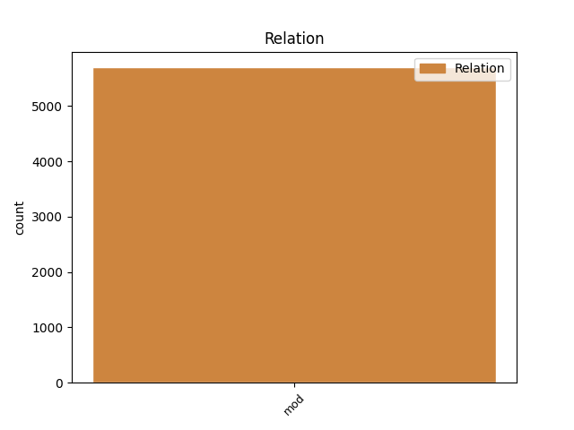
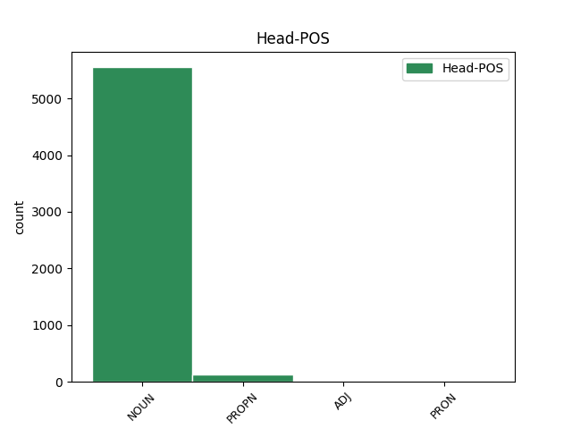
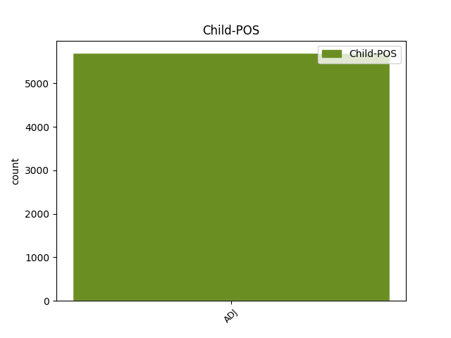

Distribution of features within this leaf



Agreement Rules sorted by frequency.
- When the dependent token is the modifer(mod) of the head token, and the dependent token is ADJ.
1 Rechnungen _ _ _ _ 0 _ _ _
2 , _ _ _ _ 0 _ _ _
3 Kontoauszüge _ _ _ _ 0 _ _ _
4 und _ _ _ _ 0 _ _ _
5 andere _ _ _ _ 0 _ _ _
6 Dokumente _ _ _ _ 0 _ _ _
7 , _ _ _ _ 0 _ _ _
8 die _ _ _ _ 0 _ _ _
9 bisher _ _ _ _ 0 _ _ _
10 aus _ _ _ _ 0 _ _ _
11 rechtlichen rechtlich ADJ ADJA Case=Dat|Degree=Pos|Number=Plur 12 mod _ _
12 Gründen Grund NOUN NN Case=Dat|Gender=Masc|Number=Plur|Person=3 0 _ _ _
13 per _ _ _ _ 0 _ _ _
14 Post _ _ _ _ 0 _ _ _
15 verschickt _ _ _ _ 0 _ _ _
16 werden _ _ _ _ 0 _ _ _
17 mussten _ _ _ _ 0 _ _ _
18 , _ _ _ _ 0 _ _ _
19 können _ _ _ _ 0 _ _ _
20 in _ _ _ _ 0 _ _ _
21 Zukunft _ _ _ _ 0 _ _ _
22 digital _ _ _ _ 0 _ _ _
23 in _ _ _ _ 0 _ _ _
24 das _ _ _ _ 0 _ _ _
25 Archiv _ _ _ _ 0 _ _ _
26 gelegt _ _ _ _ 0 _ _ _
27 werden _ _ _ _ 0 _ _ _
28 . _ _ _ _ 0 _ _ _
Disagree Examples:
1 Seiner _ _ _ _ 0 _ _ _
2 Ansicht _ _ _ _ 0 _ _ _
3 nach _ _ _ _ 0 _ _ _
4 verkehrt _ _ _ _ 0 _ _ _
5 die _ _ _ _ 0 _ _ _
6 Änderung _ _ _ _ 0 _ _ _
7 an _ _ _ _ 0 _ _ _
8 H.R. _ _ _ _ 0 _ _ _
9 1291 _ _ _ _ 0 _ _ _
10 , _ _ _ _ 0 _ _ _
11 dem _ _ _ _ 0 _ _ _
12 so _ _ _ _ 0 _ _ _
13 genannten nennen ADJ ADJA Case=Dat|Degree=Pos|Gender=Masc|Number=Sing 15 mod _ _
14 " _ _ _ _ 0 _ _ _
15 Internet Internet NOUN NN Case=Nom|Gender=Neut|Number=Sing|Person=3 0 _ _ _
16 Access _ _ _ _ 0 _ _ _
17 Charge _ _ _ _ 0 _ _ _
18 Prohibition _ _ _ _ 0 _ _ _
19 Act _ _ _ _ 0 _ _ _
20 of _ _ _ _ 0 _ _ _
21 2000 _ _ _ _ 0 _ _ _
22 " _ _ _ _ 0 _ _ _
23 , _ _ _ _ 0 _ _ _
24 dessen _ _ _ _ 0 _ _ _
25 eigentliche _ _ _ _ 0 _ _ _
26 Intention _ _ _ _ 0 _ _ _
27 grundlegend _ _ _ _ 0 _ _ _
28 . _ _ _ _ 0 _ _ _
1 Die _ _ _ _ 0 _ _ _
2 Teilnahme _ _ _ _ 0 _ _ _
3 von _ _ _ _ 0 _ _ _
4 Blu _ _ _ _ 0 _ _ _
5 an _ _ _ _ 0 _ _ _
6 der _ _ _ _ 0 _ _ _
7 Auktion _ _ _ _ 0 _ _ _
8 war _ _ _ _ 0 _ _ _
9 fraglich _ _ _ _ 0 _ _ _
10 geworden _ _ _ _ 0 _ _ _
11 , _ _ _ _ 0 _ _ _
12 weil _ _ _ _ 0 _ _ _
13 sich _ _ _ _ 0 _ _ _
14 die _ _ _ _ 0 _ _ _
15 Gesellschafter _ _ _ _ 0 _ _ _
16 dieses _ _ _ _ 0 _ _ _
17 kleinsten klein ADJ ADJA Case=Gen|Degree=Sup|Gender=Masc|Number=Plur 19 mod _ _
18 italienischen _ _ _ _ 0 _ _ _
19 Mobilfunkbetreibern Betreiber NOUN NN Case=Dat|Gender=Masc|Number=Plur|Person=3 0 _ _ _
20 nicht _ _ _ _ 0 _ _ _
21 über _ _ _ _ 0 _ _ _
22 die _ _ _ _ 0 _ _ _
23 Verteilung _ _ _ _ 0 _ _ _
24 ihrer _ _ _ _ 0 _ _ _
25 Anteile _ _ _ _ 0 _ _ _
26 einigen _ _ _ _ 0 _ _ _
27 konnten _ _ _ _ 0 _ _ _
28 . _ _ _ _ 0 _ _ _
1 Die _ _ _ _ 0 _ _ _
2 Teilnahme _ _ _ _ 0 _ _ _
3 von _ _ _ _ 0 _ _ _
4 Blu _ _ _ _ 0 _ _ _
5 an _ _ _ _ 0 _ _ _
6 der _ _ _ _ 0 _ _ _
7 Auktion _ _ _ _ 0 _ _ _
8 war _ _ _ _ 0 _ _ _
9 fraglich _ _ _ _ 0 _ _ _
10 geworden _ _ _ _ 0 _ _ _
11 , _ _ _ _ 0 _ _ _
12 weil _ _ _ _ 0 _ _ _
13 sich _ _ _ _ 0 _ _ _
14 die _ _ _ _ 0 _ _ _
15 Gesellschafter _ _ _ _ 0 _ _ _
16 dieses _ _ _ _ 0 _ _ _
17 kleinsten _ _ _ _ 0 _ _ _
18 italienischen italienisch ADJ ADJA Case=Gen|Degree=Pos|Gender=Masc|Number=Plur 19 mod _ _
19 Mobilfunkbetreibern Betreiber NOUN NN Case=Dat|Gender=Masc|Number=Plur|Person=3 0 _ _ _
20 nicht _ _ _ _ 0 _ _ _
21 über _ _ _ _ 0 _ _ _
22 die _ _ _ _ 0 _ _ _
23 Verteilung _ _ _ _ 0 _ _ _
24 ihrer _ _ _ _ 0 _ _ _
25 Anteile _ _ _ _ 0 _ _ _
26 einigen _ _ _ _ 0 _ _ _
27 konnten _ _ _ _ 0 _ _ _
28 . _ _ _ _ 0 _ _ _
1 Vor _ _ _ _ 0 _ _ _
2 allem _ _ _ _ 0 _ _ _
3 die _ _ _ _ 0 _ _ _
4 obersten oberste ADJ ADJA Case=Acc|Degree=Pos|Gender=Masc|Number=Plur 5 mod _ _
5 Plätzen Platz NOUN NN Case=Dat|Gender=Masc|Number=Plur|Person=3 0 _ _ _
6 der _ _ _ _ 0 _ _ _
7 Liste _ _ _ _ 0 _ _ _
8 sind _ _ _ _ 0 _ _ _
9 eindeutig _ _ _ _ 0 _ _ _
10 vom _ _ _ _ 0 _ _ _
11 Wert _ _ _ _ 0 _ _ _
12 von _ _ _ _ 0 _ _ _
13 Technologie-Aktien _ _ _ _ 0 _ _ _
14 bestimmt _ _ _ _ 0 _ _ _
15 . _ _ _ _ 0 _ _ _
1 Die _ _ _ _ 0 _ _ _
2 TCF _ _ _ _ 0 _ _ _
3 besteht _ _ _ _ 0 _ _ _
4 aus _ _ _ _ 0 _ _ _
5 einer _ _ _ _ 0 _ _ _
6 Sun _ _ _ _ 0 _ _ _
7 E420R _ _ _ _ 0 _ _ _
8 als _ _ _ _ 0 _ _ _
9 File-Server _ _ _ _ 0 _ _ _
10 , _ _ _ _ 0 _ _ _
11 mehreren mehrere ADJ ADJA Case=Acc|Degree=Pos|Gender=Masc|Number=Sing 12 mod _ _
12 Sun Sun PROPN NE Case=Dat|Number=Sing|Person=3 0 _ _ _
13 E420R _ _ _ _ 0 _ _ _
14 als _ _ _ _ 0 _ _ _
15 Arbeitsrechner _ _ _ _ 0 _ _ _
16 , _ _ _ _ 0 _ _ _
17 einem _ _ _ _ 0 _ _ _
18 oder _ _ _ _ 0 _ _ _
19 mehreren _ _ _ _ 0 _ _ _
20 Sun-Storage _ _ _ _ 0 _ _ _
21 Arrays _ _ _ _ 0 _ _ _
22 und _ _ _ _ 0 _ _ _
23 Cisco-Netzwerk-Equipment _ _ _ _ 0 _ _ _
24 . _ _ _ _ 0 _ _ _